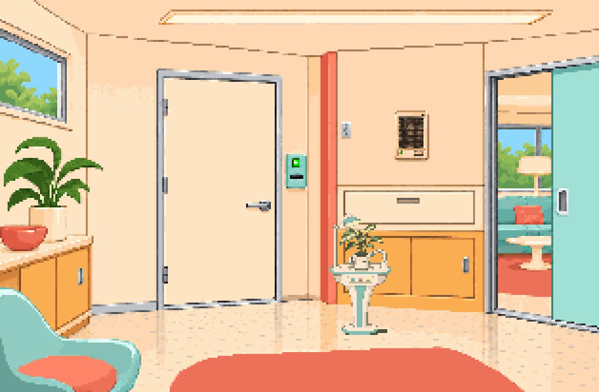
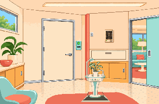
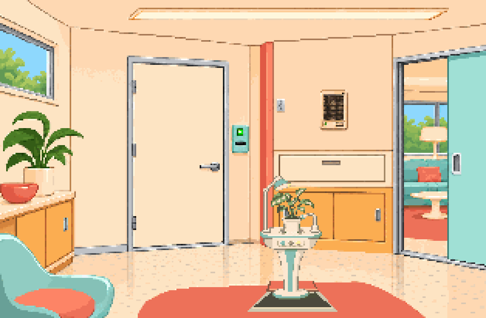
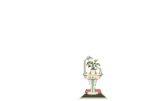
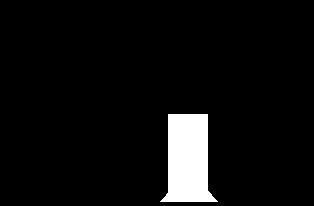
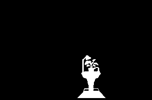

Generated candidate · owner approval pending. Station 25% larger, moved onto the red rug, with a rug-covered floor hatch.
Batch 5 gallery · Revision report · Canonical overlay · QA · Exact pixel-edit recipe







PASS: zero outside-region changes; binary alpha; hidden RGB zero; exact nearest-neighbor 4×; hatch corners sit on original red rug; all 432 earlier PNGs preserved. Adoption state rules remain unchanged. No gameplay or production changes.